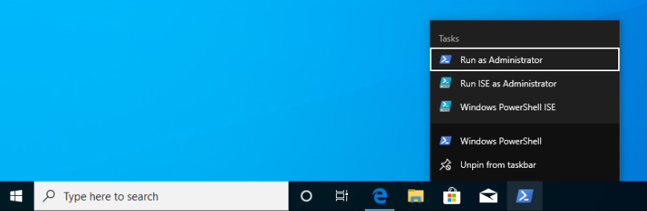

In this walkthrough we will use PowerShell and a Windows package manager called Chocolatey to set up our local development machines. We will be exploring PowerShell in greater detail later in this course. However, to begin learning about operations we will first need to install the dotnet and git CLI tools.
Windows has a pre-installed manager of Features and Services (native Windows applications and tools) which can be accessed through PowerShell. However, for third-party CLI tools we will need to install Chocolatey, an open-source package manager for Windows. Chocolatey is not a native package manager, like Ubuntu’s pre-installed apt, but is recognized by Microsoft in as an industry standard.
You can find the installation instructions on the Chocolatey installation article.
We will install Chocolatey using PowerShell, however it will require elevated permissions to download and install. You will need to open a PowerShell session as an administrator before running the following command. Recall that you can open in admin mode by right-clicking the taskbar icon for PowerShell and selecting run as administrator:
Once you have opened PowerShell in admin mode, enter the following command:
> Set-ExecutionPolicy Bypass -Scope Process -Force; [System.Net.ServicePointManager]::SecurityProtocol = [System.Net.ServicePointManager]::SecurityProtocol -bor 3072; iex ((New-Object System.Net.WebClient).DownloadString('https://chocolatey.org/install.ps1'))
This command is lengthy, but in summary it is setting a policy to allow the Chocolatey installation script to be executed and then downloading it by making a request with the .NET standard library WebClient object. Once the installation script has been downloaded it will automatically execute and install the package manager for you.
Chocolatey is the full name of the package manager, but the name of the CLI program used in PowerShell is simply choco.
After installing Chocolatey, you can access help documentation with the --help option.
> choco --help
An advantage of choco being open-source is that you can find a lot of assistance in online forums and the crowd-sourced Chocolatey documentation.
Chocolatey is modeled after many popular Linux package managers like apt. For this reason, the syntax for chocolatey should look familiar:
> choco install <package name> -y
Chocolatey also supports a number of options like --yes or -y which, like the apt option, skips confirmation prompts, automatically downloads and installs the package. To view more options view the Chocolatey install command documentation.
We can upgrade packages in Chocolatey with the simple command choco upgrade.
To upgrade the dotnetcore-sdk:
> choco upgrade <package name> -y
Chocolatey also supports upgrading all of the packages it downloaded and installed at once.
> choco upgrade all -y
Chocolatey is also responsible for keeping track of package repository sources. When you download Chocolatey for the first time it automatically loads the Chocolatey trusted sources which host common packages. In some instances, you may need to install a package that is not a part of the Chocolatey hosted sources. In this case you would need to add a custom source.
We will not be adding any sources beyond the default Chocolatey sources, but an example of the usage would follow this pattern:
> choco add source <source target>
You can find more information about adding Chocolatey repository by viewing the Chocolatey sources documentation.
Two of the CLI tools we will begin using this week are the dotnet CLI and the git version control system (VCS). Let’s install them now before learning how to use them in the coming days.
Note
Whenever you install a new CLI tool using choco you must exit all PowerShell sessions before they can be used. You can exit a PowerShell session by entering the exit command or by closing all of the open PowerShell terminal windows.
> choco install dotnetcore-sdk -y
Don’t forget to close and re-open PowerShell before entering the following command to test the installation:
> dotnet --version
# dotnet version output
You likely have been using the Git Bash program to access git and GitHub. What you may not have realized is that Git Bash is a terminal that emulates basic Bash commands and git. However, now that we are comfortable working from the command-line we can use git natively within PowerShell and Bash. Let’s install git in PowerShell using choco:
> choco install git -y
After closing and re-opening PowerShell you can confirm the installation with the following command:
> git --version
# git version output